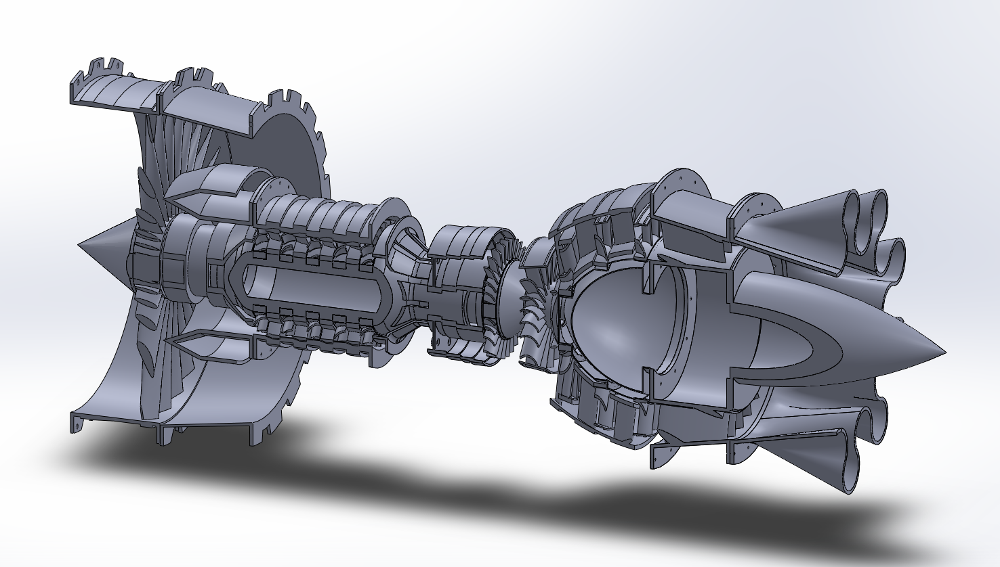
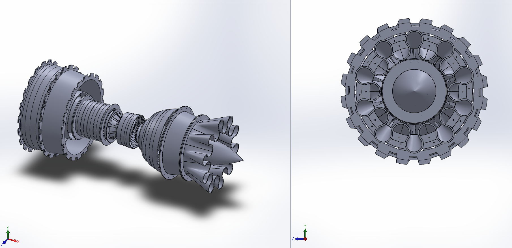
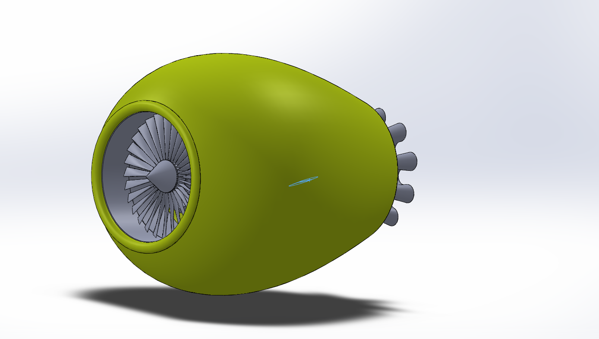
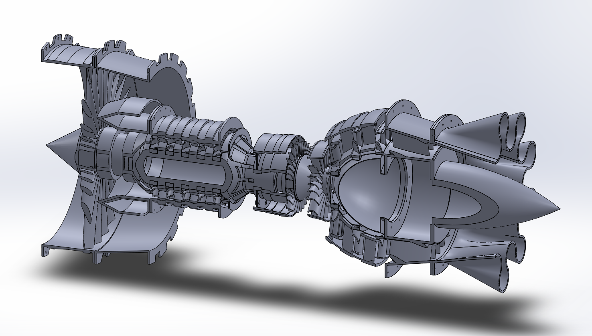
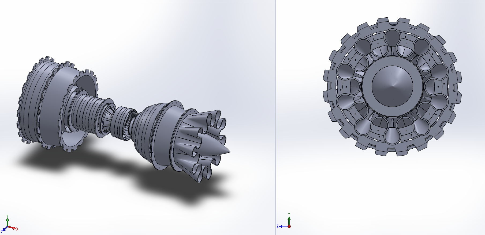
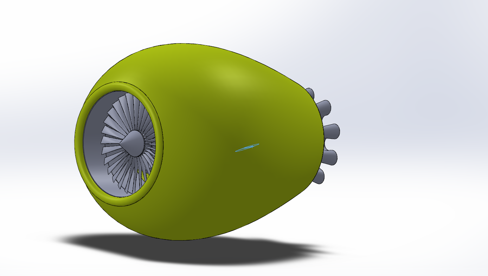
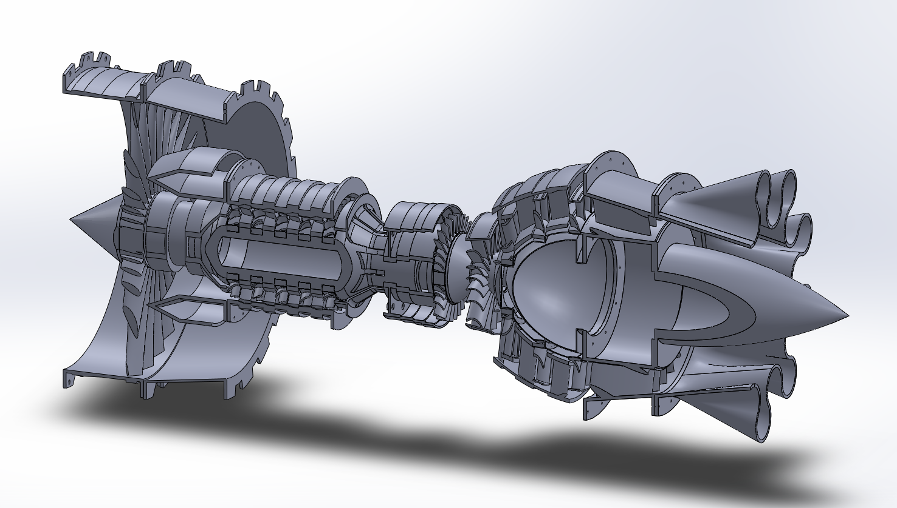
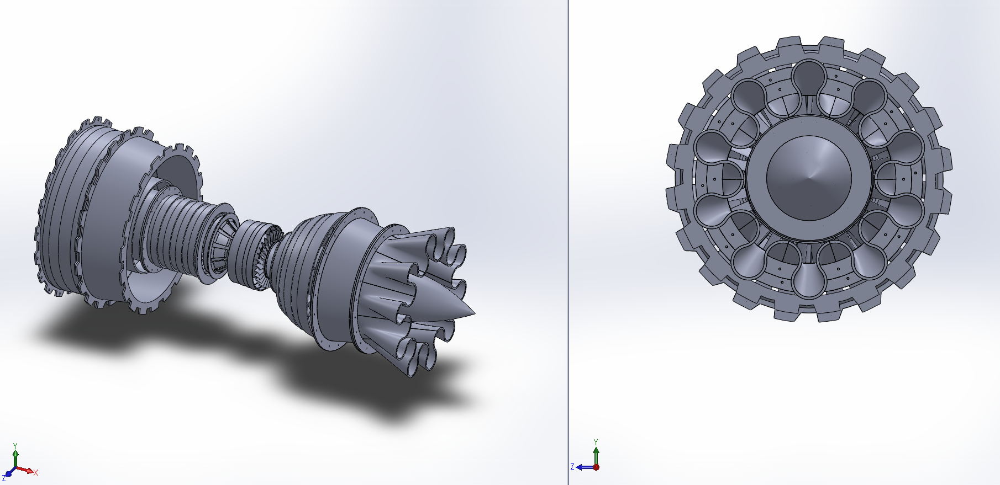
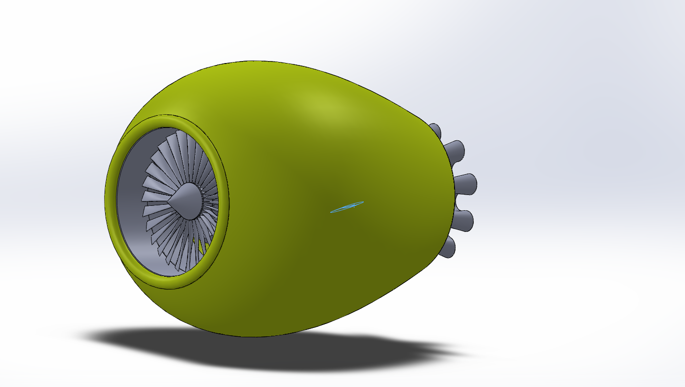

Detailed CAD modeling of a fighter jet engine showcasing compressor stages, turbine assemblies, exhaust geometry, and internal flow paths with cut sections.



This project focuses on developing a realistic CAD representation of a modern fighter jet engine. The model includes compressor discs, turbine blades, exhaust nozzles, and internal structural components aligned with real aerospace propulsion systems.
The engine was created using parametric and feature-based modeling techniques in SolidWorks. Section views were strategically used to expose internal components such as fan blades, compressors, turbine stages, and exhaust flow paths to improve understanding of engine operation.
This project enhanced my understanding of jet engine architecture, rotational component design, and complex mechanical assemblies. It strengthened my ability to visualize airflow paths, thermal considerations, and mechanical sequencing used in aerospace propulsion systems.
← Back to Projects